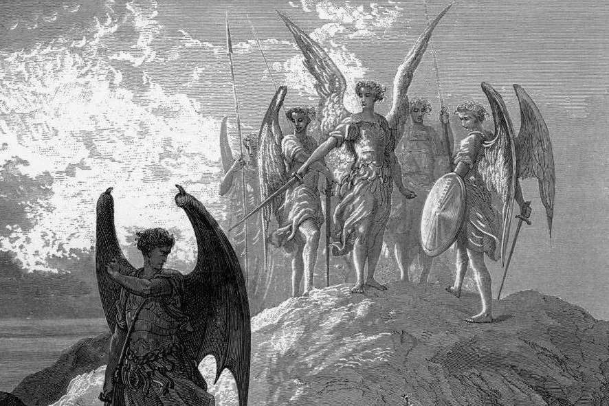

Published April 2, 2026

On the morning of 24 April 1916 in Dublin, a group of men in dark coats began walking toward the General Post Office on Sackville Street.
They are carrying rifles. One of them will be dead within a week. Another will become head of a government.
Strangest of thing about this moment is that these men believed, with a conviction we cannot now easily imagine, that what they were about to do is right.
Patrick Pearse had already decided that losing was fine. What mattered was the the blood sacrifice. Because their deaths would detonate something inside the Irish people that words and politics never could. As the poet William Butler Yeats later put it:
“All changed, changed utterly: / A terrible beauty is born.”
It worked. When the leaders were executed by the British — sixteen of them, one by one, over ten days in May — the mood in Dublin shifted. The executions did what the Rising itself had not managed to do. Embarrassing failure became sacred wound. Within six years, there was an Irish Free State.
But their impact has been wider than that. The entire tradition of just war theory since Augustine had, within a century, been overturned by philosophers.
The just war tradition since Augustine of Hippo (that’s right, hippo) was built around states. It assumed a sovereign authority capable of declaring war, commanding armies, and taking political responsibility for the outcome.
This is the version of the just war theory which became the intellectual scaffolding of international law. The Geneva Conventions are, in a sense, just war theory made binding.
But this has meant non-state actors were excluded from waging war. So when Al-Qaeda attacked the twin towers on 9/11, the US found it couldn’t launch a war against them. Legally, they had to look for a state to invade, and on 7 October 2001 they chose Afghanistan which was hosting its leaders.
The man with the rifle walking toward the Post Office on a grey Dublin morning was a non-state actor. But the theory didn’t concern itself with the person who rises up against the state.
It was this omission that nagged at Anthony Kenny. A working-class Catholic from Liverpool, he shed his faith and became an important philosopher at Oxford where, in 1985, he helped block Margaret Thatcher's honorary degree.
Kenny thought that if a community faced genuine tyranny, had exhausted peaceful means, and distinguished between combatants and civilians — there was no philosophical reason a rebellion could not meet the criteria that would make a war just.
Hanging over all of this were The Troubles in Northern Ireland. Kenny began taking seriously the possibility that the ancient Catholic just war framework did not automatically exclude the IRA.
One of Kenny's students in the 1980s was Stephen Chan, now Professor at SOAS. There he teaches a course called Political Thought on the Just Rebellion, taking Kenny's question and asking it of the whole world: Shanghai, Kenya, Iran, Zimbabwe, Gaza.
In turn, I was one of Chan’s students, and I’ve been waiting eagerly for the publication of his book Political Thought on Uprisings: Essays on Just Rebellion, which has finally now been published.
In it, he holds up Kenny’s same magnifying glass to modern day non-state actors, such as Hamas and even ISIS. If that sounds shocking, then you’re feeling what Kenny must have felt trying to question people’s ordinary perceptions of the IRA back in the 80s.
Note how interesting it is that supporting the IRA just isn’t very controversial anymore. Support for the non-state actors of the past no longer really shock us. Consider how normal it is to hear liberals express support for the Black Panthers.
But try being openly pro-Palestine and you’ll get a taste of where Kenny’s just rebellion questioning gets you.
Student radicals used to hang posters of Mao in their bedrooms, so I suppose it is interesting that no students I met in my time would sleep beneath posters of al-Baghdadi or bin-Laden.
But if the IRA is so uncontroversial now, will 9/11 and the formation of a real Caliphate in the Middle East be normalised in another 40 years’ time?
Since Pearse’s day, the majority of armed conflicts now occur within the borders of states, rather than across international borders (or combine the two). The traditional idea that war is an activity waged exclusively between states has collapsed disastrously.
But for some reason after 1985, Kenny didn’t devote much time anymore to thinking about just rebellion. Instead, he published a book in 1989 called Managing Software: The Businessman's Guide to Software Development. He also compiled an anthology of mountain poetry.
Thankfully Chan took up the mantel with this new book and is applying it to some pretty controversial non-state actors across Latin America, Asia, the Middle East, and Africa.
Unfortunately for you, it costs £65... Email me instead for a pdf.